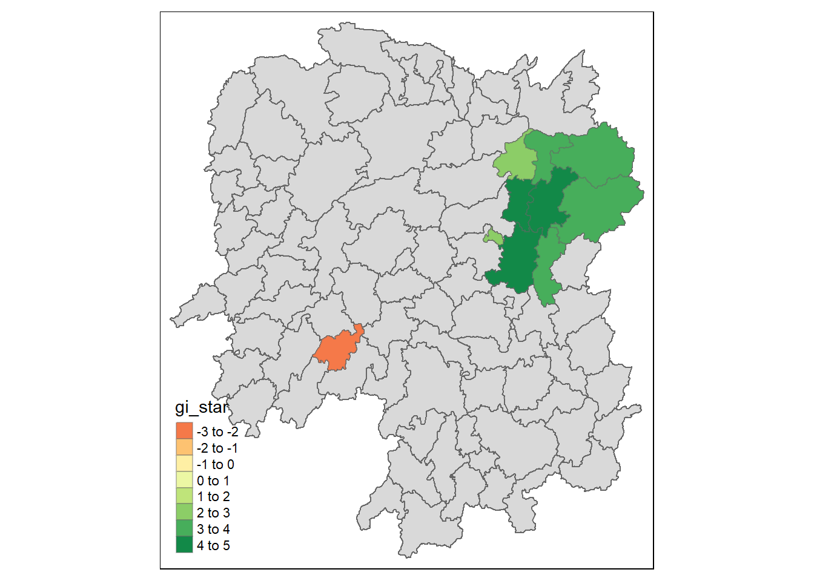

pacman::p_load(sf, sfdep, tmap, tidyverse)In-Class Exercise 2B: Global and Local Measures of Spatial Association - sfdep methods
Overview
This in-class exercise introduces an alternative R package to spdep package, called sfdep package.
Getting Started
Installing and Loading the R Packages
Four R packages will be used for this in-class exercise, they are, sf, sfdep, tmap, tidyverse.
The Data
For the purpose of this in-class exercise, the Hunan data sets will be used. There are two data sets:
Hunan, a geospatial data set in ESRI shapefile format, and
Hunan_2012, an attribute data in csv format.
Import geospatial data
uses st_read() of sf package to import Hunan shapefile into R. The imported shapefile will be simple features Object of sf.
hunan <- st_read(dsn = "data/geospatial",
layer = "Hunan")Reading layer `Hunan' from data source
`C:\PeiShan0502\ISSS624\In-class_Ex2\data\geospatial' using driver `ESRI Shapefile'
Simple feature collection with 88 features and 7 fields
Geometry type: POLYGON
Dimension: XY
Bounding box: xmin: 108.7831 ymin: 24.6342 xmax: 114.2544 ymax: 30.12812
Geodetic CRS: WGS 84Importing attribute table
Next, we will import Hunan_2012.csv into R by using read_csv() of readr package. The output is R data frame class.
hunan2012 <- read_csv("data/aspatial/Hunan_2012.csv", show_col_types = FALSE)Combining both data frame by using left join
hunan_GDPPC <- left_join(hunan, hunan2012) %>%
select(1:4, 7, 15)Joining with `by = join_by(County)`Plotting a choropleth map
tmap_mode("plot")tmap mode set to plottingtm_shape(hunan_GDPPC) +
tm_fill("GDPPC",
style = "quantile",
palette = "Blues",
title = "GDPPC") +
tm_layout(main.title = "Distribution of GDP per capita by district, Hunan Province",
main.title.position = "center",
main.title.size = 1.2,
legend.height = 0.45,
legend.width = 0.35,
frame = TRUE) +
tm_borders(alpha = 0.5) +
tm_compass(type="8star", size = 2) +
tm_scale_bar() +
tm_grid(alpha =0.2)
Global Measures of Spatial Association
Step 1: Deriving contiguity weights: Queen’s method
In the code chunk below, queen method is used to derive the contiguity weights.
wm_q <- hunan_GDPPC %>%
mutate(nb = st_contiguity(geometry),
wt = st_weights(nb,
style = "W"),
.before = 1) wm_qSimple feature collection with 88 features and 8 fields
Geometry type: POLYGON
Dimension: XY
Bounding box: xmin: 108.7831 ymin: 24.6342 xmax: 114.2544 ymax: 30.12812
Geodetic CRS: WGS 84
First 10 features:
nb
1 2, 3, 4, 57, 85
2 1, 57, 58, 78, 85
3 1, 4, 5, 85
4 1, 3, 5, 6
5 3, 4, 6, 85
6 4, 5, 69, 75, 85
7 67, 71, 74, 84
8 9, 46, 47, 56, 78, 80, 86
9 8, 66, 68, 78, 84, 86
10 16, 17, 19, 20, 22, 70, 72, 73
wt
1 0.2, 0.2, 0.2, 0.2, 0.2
2 0.2, 0.2, 0.2, 0.2, 0.2
3 0.25, 0.25, 0.25, 0.25
4 0.25, 0.25, 0.25, 0.25
5 0.25, 0.25, 0.25, 0.25
6 0.2, 0.2, 0.2, 0.2, 0.2
7 0.25, 0.25, 0.25, 0.25
8 0.1428571, 0.1428571, 0.1428571, 0.1428571, 0.1428571, 0.1428571, 0.1428571
9 0.1666667, 0.1666667, 0.1666667, 0.1666667, 0.1666667, 0.1666667
10 0.125, 0.125, 0.125, 0.125, 0.125, 0.125, 0.125, 0.125
NAME_2 ID_3 NAME_3 ENGTYPE_3 County GDPPC
1 Changde 21098 Anxiang County Anxiang 23667
2 Changde 21100 Hanshou County Hanshou 20981
3 Changde 21101 Jinshi County City Jinshi 34592
4 Changde 21102 Li County Li 24473
5 Changde 21103 Linli County Linli 25554
6 Changde 21104 Shimen County Shimen 27137
7 Changsha 21109 Liuyang County City Liuyang 63118
8 Changsha 21110 Ningxiang County Ningxiang 62202
9 Changsha 21111 Wangcheng County Wangcheng 70666
10 Chenzhou 21112 Anren County Anren 12761
geometry
1 POLYGON ((112.0625 29.75523...
2 POLYGON ((112.2288 29.11684...
3 POLYGON ((111.8927 29.6013,...
4 POLYGON ((111.3731 29.94649...
5 POLYGON ((111.6324 29.76288...
6 POLYGON ((110.8825 30.11675...
7 POLYGON ((113.9905 28.5682,...
8 POLYGON ((112.7181 28.38299...
9 POLYGON ((112.7914 28.52688...
10 POLYGON ((113.1757 26.82734...Computing Global Moran’ I
In the code chunk below, global_moran() function is used to compute the Moran’s I value. Different from spdep package, the output is a tibble data.frame.
moranI <- global_moran(wm_q$GDPPC,
wm_q$nb,
wm_q$wt)
glimpse(moranI)List of 2
$ I: num 0.301
$ K: num 7.64Performing Global Moran’s I test
In general, Moran’s I test will be performed instead of just computing the Moran’s I statistics. With sfdep package, Moran’s I test can be performed by using global_moran_test() as shown in the code chunk below.
global_moran_test(wm_q$GDPPC,
wm_q$nb,
wm_q$wt)
Moran I test under randomisation
data: x
weights: listw
Moran I statistic standard deviate = 4.7351, p-value = 1.095e-06
alternative hypothesis: greater
sample estimates:
Moran I statistic Expectation Variance
0.300749970 -0.011494253 0.004348351 Performing Global Moran’I permutation test
In practice, monte carlo simulation should be used to perform the statistical test. For sfdep, it is supported by globel_moran_perm()
It is always a good practice to use set.seed() before performing simulation. This is to ensure that the computation is reproducible.
set.seed(1234)Next, global_moran_perm() is used to perform Monte Carlo simulation.
global_moran_perm(wm_q$GDPPC,
wm_q$nb,
wm_q$wt,
nsim = 99)
Monte-Carlo simulation of Moran I
data: x
weights: listw
number of simulations + 1: 100
statistic = 0.30075, observed rank = 100, p-value < 2.2e-16
alternative hypothesis: two.sidedThe report above show that the p-value is smaller than alpha value of 0.05. Hence, reject the null hypothesis that the spatial patterns spatial independent. Because the Moran’s I statistics is greater than 0. We can infer the spatial distribution shows sign of clustering.
Note that the number of simulations is alway equal to nsim + 1. If nsim = 99, this means 100 simulation will be performed.
Computing local Moran’s I
In this section, you will learn how to compute Local Moran’s I of GDPPC at county level by using local_moran() of sfdep package.
lisa <- wm_q %>%
mutate(local_moran = local_moran(
GDPPC, nb, wt, nsim = 99),
.before = 1) %>%
unnest(local_moran)The output of local_moran() is a sf data.frame containing the columns ii, eii, var_ii, z_ii, p_ii, p_ii_sim, and p_folded_sim.
ii: local moran statistic
eii: expectation of local moran statistic; for localmoran_permthe permutation sample means
var_ii: variance of local moran statistic; for localmoran_permthe permutation sample standard deviations
z_ii: standard deviate of local moran statistic; for localmoran_perm based on permutation sample means and standard deviations p_ii: p-value of local moran statistic using pnorm(); for localmoran_perm using standard deviatse based on permutation sample means and standard deviations p_ii_sim: For
localmoran_perm(),rank()andpunif()of observed statistic rank for [0, 1] p-values usingalternative=-p_folded_sim: the simulation folded [0, 0.5] range ranked p-value (based on https://github.com/pysal/esda/blob/4a63e0b5df1e754b17b5f1205b cadcbecc5e061/esda/crand.py#L211-L213)skewness: For
localmoran_perm, the output of e1071::skewness() for the permutation samples underlying the standard deviateskurtosis: For
localmoran_perm, the output of e1071::kurtosis() for the permutation samples underlying the standard deviates.
Note: unnest() of tidyr package is used to expand a list-column containing data frames into rows and columns.
Visualising local Moran’s I
In this code chunk below, tmap functions are used prepare a choropleth map by using value in the ii field.
tmap_mode("plot")tmap mode set to plottingtm_shape(lisa) +
tm_fill("ii") +
tm_borders(alpha = 0.5) +
tm_view(set.zoom.limits = c(6,8)) +
tm_layout(main.title = "local Moran's I of GDPPC",
main.title.size = 0.8)Variable(s) "ii" contains positive and negative values, so midpoint is set to 0. Set midpoint = NA to show the full spectrum of the color palette.
Visualising p-value of local Moran’s I
In the code chunk below, tmap functions are used prepare a choropleth map by using value in the p_ii_sim field.
tmap_mode("plot")tmap mode set to plottingtm_shape(lisa) +
tm_fill("p_ii_sim") +
tm_borders(alpha = 0.5) +
tm_layout(main.title = "p-value of local Moran's I",
main.title.size = 0.8)
For p-values, the appropriate classification should be 0.001, 0.01, 0.05 and not significant instead of using default classification scheme.
Visualising local Moran’s I and p-value
For effective comparison, it will be better for us to plot both maps next to each other as shown below.
tmap_mode("plot")tmap mode set to plottingmap1 <- tm_shape(lisa) +
tm_fill("ii") +
tm_borders(alpha = 0.5) +
tm_view(set.zoom.limits = c(6,8)) +
tm_layout(main.title = "local Moran's I of GDPPC",
main.title.size = 0.8)
map2 <- tm_shape(lisa) +
tm_fill("p_ii",
breaks = c(0, 0.001, 0.01, 0.05, 1),
labels = c("0.001", "0.01", "0.05", "Not sig")) +
tm_borders(alpha = 0.5) +
tm_layout(main.title = "p-value of local Moran's I",
main.title.size = 0.8)
tmap_arrange(map1, map2, ncol = 2)Variable(s) "ii" contains positive and negative values, so midpoint is set to 0. Set midpoint = NA to show the full spectrum of the color palette.
Visualising LISA map
LISA map is a categorical map showing outliers and clusters. There are two types of outliers namely: High-Low and Low-High outliers. Likewise, there are two type of clusters namely: High-High and Low-Low cluaters. In fact, LISA map is an interpreted map by combining local Moran’s I of geographical areas and their respective p-values.
In lisa sf data.frame, we can find three fields contain the LISA categories. They are mean, median and pysal. In general, classification in mean will be used as shown in the code chunk below.
lisa_sig <- lisa %>%
filter(p_ii < 0.05)
tmap_mode("plot")tmap mode set to plottingtm_shape(lisa) +
tm_polygons() +
tm_borders(alpha = 0.5) +
tm_shape(lisa_sig) +
tm_fill("mean") +
tm_borders(alpha = 0.4)Warning: One tm layer group has duplicated layer types, which are omitted. To
draw multiple layers of the same type, use multiple layer groups (i.e. specify
tm_shape prior to each of them).
Hot Spot and Cold Spot Area Analysis (HCSA)
HCSA uses spatial weights to identify locations of statistically significant hot spots and cold spots in an spatially weighted attribute that are in proximity to one another based on a calculated distance. The analysis groups features when similar high (hot) or low (cold) values are found in a cluster. The polygon features usually represent administration boundaries or a custom grid structure.
Computing local Gi* statistics
We derive an inverse distance weights matrix:
wm_idw <- hunan_GDPPC %>%
mutate(nb = st_contiguity(geometry),
wts = st_inverse_distance(nb, geometry,
scale = 1,
alpha = 1),
.before = 1)! Polygon provided. Using point on surface.Warning: There was 1 warning in `stopifnot()`.
ℹ In argument: `wts = st_inverse_distance(nb, geometry, scale = 1, alpha = 1)`.
Caused by warning in `st_point_on_surface.sfc()`:
! st_point_on_surface may not give correct results for longitude/latitude dataNext, local_gstar_perm() of sfdep package will be used to compute local Gi* statistics as shown in the code chunk below.
HCSA <- wm_idw %>%
mutate(local_Gi = local_gstar_perm(
GDPPC, nb, wt, nsim = 99),
.before = 1) %>%
unnest(local_Gi)
HCSASimple feature collection with 88 features and 16 fields
Geometry type: POLYGON
Dimension: XY
Bounding box: xmin: 108.7831 ymin: 24.6342 xmax: 114.2544 ymax: 30.12812
Geodetic CRS: WGS 84
# A tibble: 88 × 17
gi_star e_gi var_gi p_value p_sim p_folded_sim skewness kurtosis nb
<dbl> <dbl> <dbl> <dbl> <dbl> <dbl> <dbl> <dbl> <nb>
1 0.0416 0.0114 6.41e-6 0.0493 9.61e-1 0.7 0.35 0.875 <int>
2 -0.333 0.0106 3.84e-6 -0.0941 9.25e-1 1 0.5 0.661 <int>
3 0.281 0.0126 7.51e-6 -0.151 8.80e-1 0.9 0.45 0.640 <int>
4 0.411 0.0118 9.22e-6 0.264 7.92e-1 0.6 0.3 0.853 <int>
5 0.387 0.0115 9.56e-6 0.339 7.34e-1 0.62 0.31 1.07 <int>
6 -0.368 0.0118 5.91e-6 -0.583 5.60e-1 0.72 0.36 0.594 <int>
7 3.56 0.0151 7.31e-6 2.61 9.01e-3 0.06 0.03 1.09 <int>
8 2.52 0.0136 6.14e-6 1.49 1.35e-1 0.2 0.1 1.12 <int>
9 4.56 0.0144 5.84e-6 3.53 4.17e-4 0.04 0.02 1.23 <int>
10 1.16 0.0104 3.70e-6 1.82 6.86e-2 0.12 0.06 0.416 <int>
# ℹ 78 more rows
# ℹ 8 more variables: wts <list>, NAME_2 <chr>, ID_3 <int>, NAME_3 <chr>,
# ENGTYPE_3 <chr>, County <chr>, GDPPC <dbl>, geometry <POLYGON [°]>Visualising Gi*
tmap_mode("plot")tmap mode set to plottingtm_shape(HCSA) +
tm_fill("gi_star") +
tm_borders(alpha = 0.5) +
tm_view(set.zoom.limits = c(6,8))Variable(s) "gi_star" contains positive and negative values, so midpoint is set to 0. Set midpoint = NA to show the full spectrum of the color palette.
Visualising p-value of HCSA
tmap_mode("plot")tmap mode set to plottingtm_shape(HCSA) +
tm_fill("p_sim") +
tm_borders(alpha = 0.5)
Visuaising local HCSA
For effective comparison, we plot both maps next to each other as shown below.
tmap_mode("plot")tmap mode set to plottingmap1 <- tm_shape(HCSA) +
tm_fill("gi_star") +
tm_borders(alpha = 0.5) +
tm_view(set.zoom.limits = c(6,8)) +
tm_layout(main.title = "Gi* of GDPPC",
main.title.size = 0.8)
map2 <- tm_shape(HCSA) +
tm_fill("p_value",
breaks = c(0, 0.001, 0.01, 0.05, 1),
labels = c("0.001", "0.01", "0.05", "Not sig")) +
tm_borders(alpha = 0.5) +
tm_layout(main.title = "p-value of Gi*",
main.title.size = 0.8)
tmap_arrange(map1, map2, ncol = 2)Variable(s) "gi_star" contains positive and negative values, so midpoint is set to 0. Set midpoint = NA to show the full spectrum of the color palette.Warning: Values have found that are less than the lowest breakWarning: Values have found that are higher than the highest breakVariable(s) "p_value" contains positive and negative values, so midpoint is set to 0. Set midpoint = NA to show the full spectrum of the color palette.
Visualising hot spot and cold spot areas
Now, we are ready to plot the significant (i.e. p-values less than 0.05) hot spot and cold spot areas by using appropriate tmap functions as shown below.
HCSA_sig <- HCSA %>%
filter(p_sim < 0.05)
tmap_mode("plot")tmap mode set to plottingtm_shape(HCSA) +
tm_polygons() +
tm_borders(alpha = 0.5) +
tm_shape(HCSA_sig) +
tm_fill("gi_star") +
tm_borders(alpha = 0.4)Warning: One tm layer group has duplicated layer types, which are omitted. To
draw multiple layers of the same type, use multiple layer groups (i.e. specify
tm_shape prior to each of them).Variable(s) "gi_star" contains positive and negative values, so midpoint is set to 0. Set midpoint = NA to show the full spectrum of the color palette.
Figure above reveals that there is one hot spot area and two cold spot areas. Interestingly, the hot spot areas coincide with the High-high cluster identifies by using local Moran’s I method in the earlier sub-section.